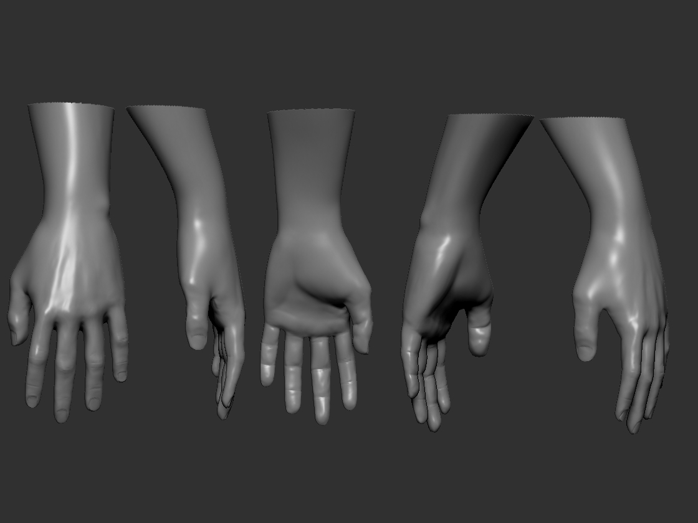

Samurai Character
Realistic character modeled in ZBrush and Maya with a focus on anatomy and deformation-ready topology. Retopologized in Maya using Quad Draw. Assets shown at multiple production stages, including final mesh, clothing, and facial and hand details.
 Face sculpt
Face sculpt
Hand sculptWestern Still Life
Hard-surface modeling and texturing project inspired by “Rocky Raccoon” by The Beatles. Focus on detailed prop modeling and material work.
 Final render
Final render
About me
I’m a Computer Science student at BYU (Animation & Games emphasis, graduating April 2027) working as a character TD on student films and games.
Before that I produced 12+ short 3D animations for BYU Information Systems and designed a mascot game for students to play during football games. I’m looking to contribute to character rigging and technical art pipelines for animated projects.
- Maya
- mGear
- Unreal Engine
- Python
- C++
- C
- Java
- Linux
- Cinema 4D
- ZBrush
- Substance Painter
- Photoshop
- After Effects
- English
- Spanish